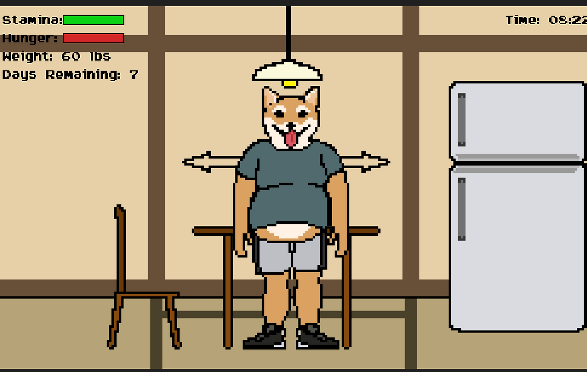

Fatty Shiba

FATTY SHIBA WEB-BASED SIMULATION GAME
FATTY SHIBA is a simulation game which players need to help a fat shiba inu lose weight by doing exercise and going on a diet. The idea of this game is trying to deliver the idea that losing weight is a very hard thing to achieve, for it requires one not only to have a strong will but also to a scientific method.
Engine: p5.js
This is a solo project.
Design Process
When designing this game, I want players to feel the difficulty of losing weight both physically and mentally: it is not just about doing exercises, but also about managing the diet and time. More importantly, one has to stick to the schedule for a long period to make further progress.
The mini-games (i.e. the exercises) indicate the standards in all the exercises, namely, gesture accuracy, timing, and repetition. In particular, one of them is yoga. The game is similar to Dance Dance Revolution, which players need to hit the corresponding keys when the notes reach the top, and I deliberately make the four key as Y, O, G, A to create challenges.
Besides physical challenges in mini-games, players also need to think about the schedule. The difficulty of all the mini-games varies, and so does the energy and stamina costs. Thus, players need to wisely choose what kind of food to eat and how many hours they should sleep. In order words, without a careful plan, Shiba won't be able to lose weight.